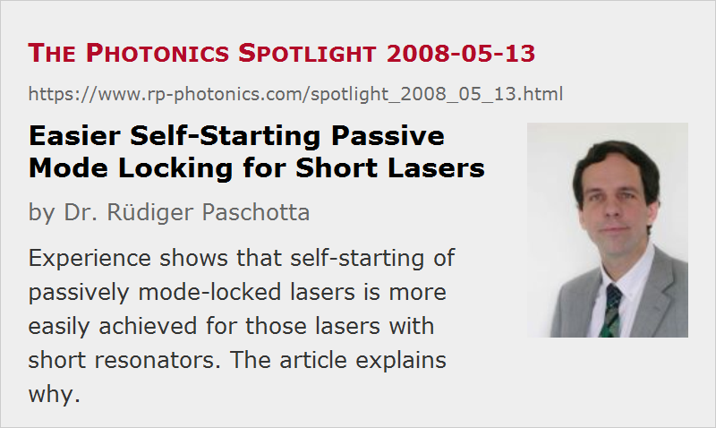

Easier Self-Starting Passive Mode Locking for Short Lasers
Posted on 2008-05-13 as a part of the Photonics Spotlight (available as e-mail newsletter!)
Permanent link: https://www.rp-photonics.com/spotlight_2008_05_13.html
Author: Dr. Rüdiger Paschotta, RP Photonics Consulting GmbH
Abstract: Experience shows that self-starting of passively mode-locked lasers is more easily achieved for those lasers with short resonators. The article explains why.

Ref.: encyclopedia articles on self-starting mode locking, mode-locked lasers
When a passively mode-locked laser is turned on, it can take a while – hundreds or even many thousands of resonator round trips – until an ultrashort pulse is formed. In some cases, the initial pulse formation even requires some external intervention – the laser is not self-starting. An interesting question is how the length of the laser resonator should influence the ease of self-starting.
In a discussion with me, a well-known expert in the field once expressed the following thoughts. The longer the laser resonator, the larger will the ratio of peak power to average power during ultrashort pulse operation be, assuming that the pulse duration achieved is not strongly dependent on the resonator length. Therefore, a passively mode-locked laser with a long resonator has a stronger “incentive” for being in the mode-locked state, and should thus exhibit easier self-starting than a short laser.
However, practical experience tells us the opposite. For example, Kerr lens mode-locked titanium–sapphire lasers usually have a resonator length of the order of 1 m or more, and often are not reliably self-starting, while some miniature Ti:sapphire lasers, also Kerr lens mode-locked, start quite easily. Also, in the very few cases where I saw a SESAM mode-locked laser with non-reliable self-starting, this always was a rather long one. Why is this?
The issue can be understood by considering the degree of saturation of the saturable absorber. The laser design must be made so that a reasonable degree of saturation is achieved during normal mode-locked operation. For a long-resonator laser, however, this means that the absorber saturation in the start-up phase is very weak, just because the peak power is still so far below the final peak power. Therefore, the absorber does very little to start the mode locking, and the tiniest disturbing effect (e.g. resulting from weak parasitic reflections) may prevent the pulse build-up. If one would design a laser so that it has any significant absorber saturation in the start-up phase, the absorber would be totally over-saturated during normal operation, and thus not work well: it could e.g. exhibit instabilities related to multiple circulating pulses, or at least produce longer pulses than necessary.
Finally, concerning “incentives”: a laser is not cute enough to anticipate that it could have lower resonator losses if it would produce shorter pulses. Therefore, such an incentive cannot work.
This article is a posting of the Photonics Spotlight, authored by Dr. Rüdiger Paschotta. You may link to this page and cite it, because its location is permanent. See also the RP Photonics Encyclopedia.
Note that you can also receive the articles in the form of a newsletter or with an RSS feed.
Questions and Comments from Users
Here you can submit questions and comments. As far as they get accepted by the author, they will appear above this paragraph together with the author’s answer. The author will decide on acceptance based on certain criteria. Essentially, the issue must be of sufficiently broad interest.
Please do not enter personal data here; we would otherwise delete it soon. (See also our privacy declaration.) If you wish to receive personal feedback or consultancy from the author, please contact him e.g. via e-mail.
By submitting the information, you give your consent to the potential publication of your inputs on our website according to our rules. (If you later retract your consent, we will delete those inputs.) As your inputs are first reviewed by the author, they may be published with some delay.
|  |
If you like this page, please share the link with your friends and colleagues, e.g. via social media:
These sharing buttons are implemented in a privacy-friendly way!